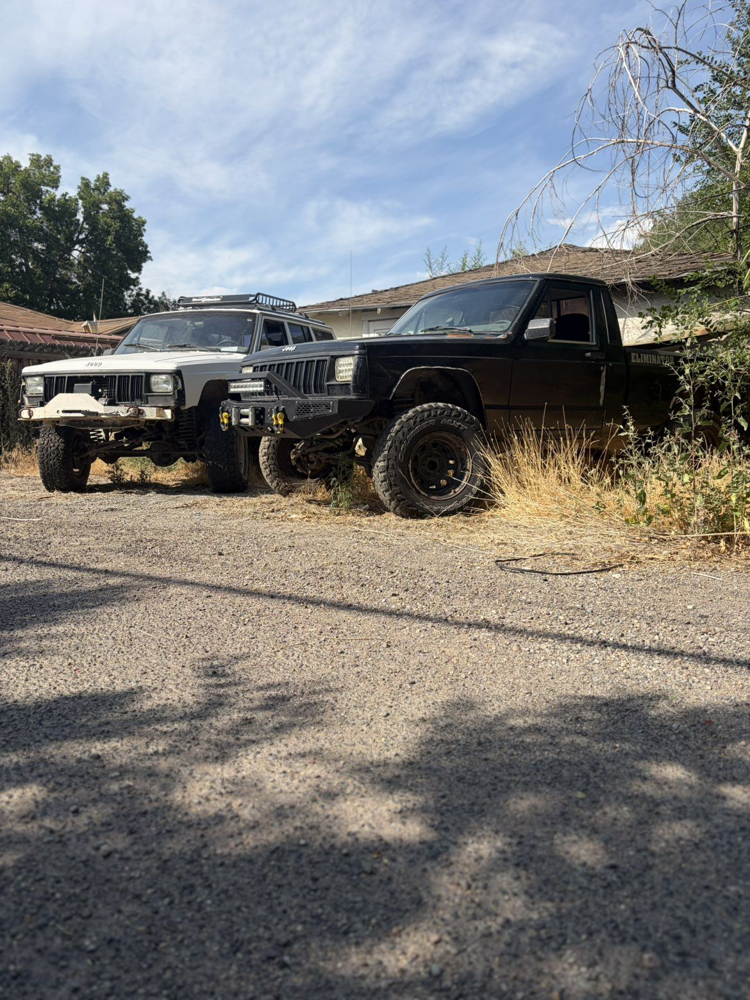

Winched out, dug out, or dragged out — 4L Offroad Recovery handles the recoveries standard tow trucks turn down. Trail, mud, snow, or backcountry, we come to you.

Don't wait on a tow truck that can't reach you. Call us direct.
Every recovery is different. Our rigs and rigging carry the gear for whatever the terrain throws at you.
Precision winching from anchored recovery points — steep grades, loose rock, and washouts included.
Full extraction for high-centered, rolled, or wedged vehicles — trucks, UTVs, and side-by-sides.
Bogged in a wash or buried in a mud hole — we pull clean without tearing up the trail further.
Drifted-in, sliding off-grade, or stuck on ice — recovery gear built for cold-weather backcountry.
No cell signal, no maintained road — we run recovery deep off the pavement, on your coordinates.
24/7 emergency response when a situation turns from inconvenient to urgent.
4L runs recoveries throughout the Mountain West and Pacific Northwest — wherever the trail leads.
Recovery is all we do — not a side job for a flatbed tow company.
Rigs and drivers built to reach coordinates, not just addresses.
Winches, rigging, and recovery boards matched to real trail conditions.
No signal, no maintained road — we still find a way in.
Clear communication, honest timelines, and careful handling of your vehicle.
If you're stranded right now, call — it's the fastest way to reach us. For non-urgent requests or planning ahead, send the details below.
If your situation is urgent, don't wait on a form — call 208-479-4035 directly and describe your location as best you can.